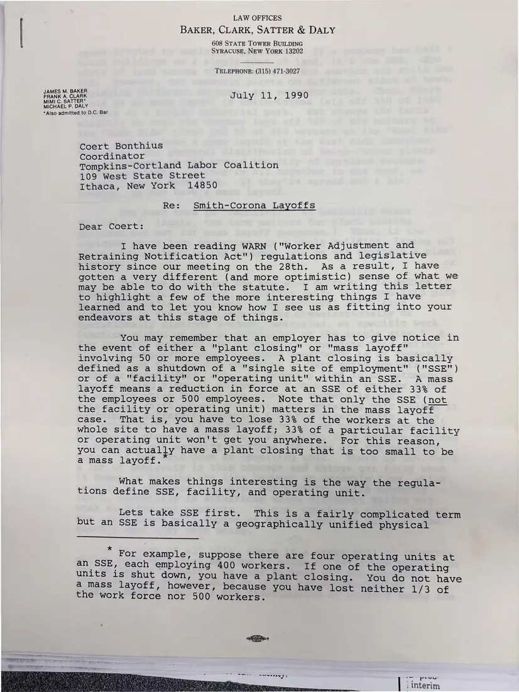
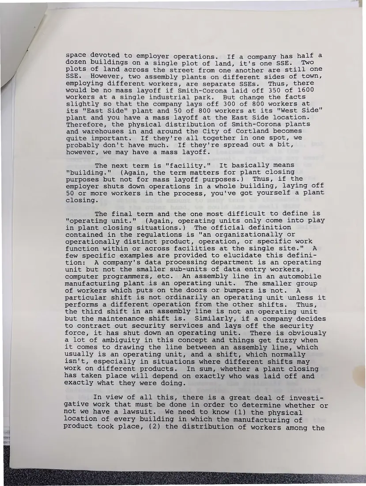
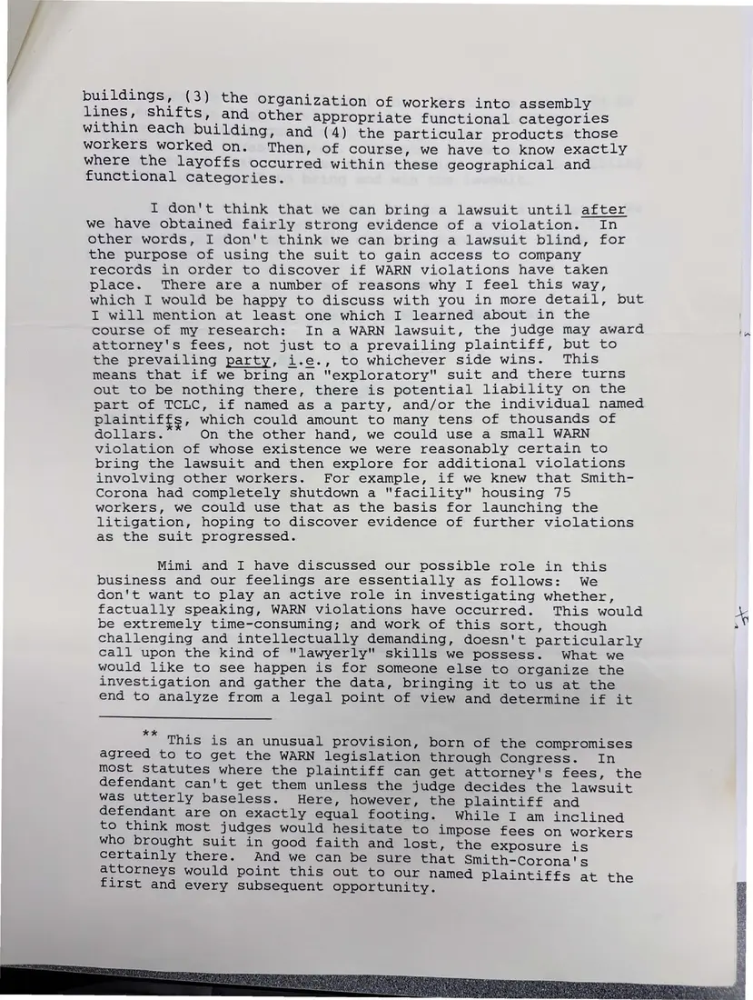
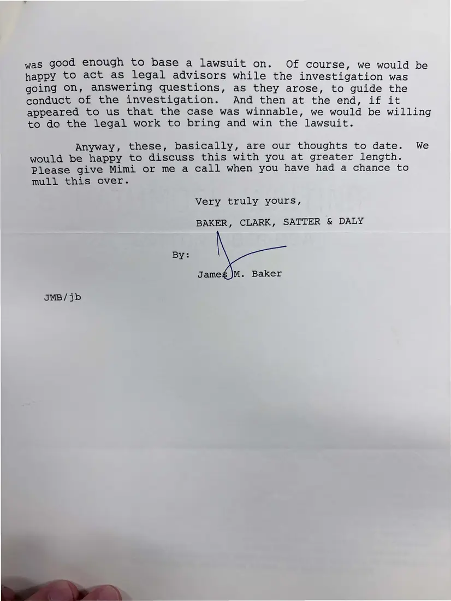

Letter, 4 pages
James M. Baker's analysis of the WARN case against Smith Corona
July 11, 1990
A four-page letter explaining how WARN defines a single site, facility, and operating unit, what evidence the coalition would need, and why the firm did not think it could bring a lawsuit yet, while offering to advise the investigation.
Download or cite this itemPages


(open zoom view)Read the page text (machine-read, mostly readable)
This text was generated automatically from the photograph and has not been corrected. The image is the authoritative record.
LAW OFFICES
BAKER, CLARK, SATTER & DALY
608 STATE TOWER BUILDING
SYRACUSE, NEW YORK 13202
TELEPHONE: (315) 471-3027
JAMES M. BAKER
FRANK A. CLARK July 11 j 1990
MIMI C. SATTER*
MICHAEL P. DALY
*Also admitted to D.C. Bar
Coert Bonthius
Coordinator de
Tompkins-Cortland Labor Coalition
109 West State Street
Ithaca, New York 14850
Re: Smith-Corona Layoffs
Dear Coert:
I have been reading WARN ("Worker Adjustment and
Retraining Notification Act") regulations and legislative
history since our meeting on the 28th. As a result, I have
gotten a very different (and more optimistic) sense of what we
may be able to do with the statute. I am writing this letter
to highlight a few of the more interesting things I have
learned and to let you know how I see us as fitting into your
endeavors at this stage of things.
You may remember that an employer has to give notice in
the event of either a "plant closing" or "mass layoff"
involving 50 or more employees. A plant closing is basically
defined as a shutdown of a "Single site of employment" ("SSE")
or of a "facility" or “operating unit" within an SSE. A mass
layoff means a reduction in force at an SSE of either 33% of
the employees or 500 employees. Note that only the SSE (not
the facility or operating unit) matters in the mass layoff
case. That is, you have to lose 33% of the workers at the
whole site to have a mass layoff; 33% of a particular facility
or operating unit won't get you anywhere. For this reason,
you can actually have a plant closing that is too small to be
amass layoff.
What makes things interesting is the way the regula-
tions define SSE, facility, and operating unit.
Lets take SSE first. This is a fairly complicated term
but an SSE is basically a geographically unified physical
For example, suppose there are four operating units at
an SSE, each employing 400 workers. If one of the operating
units is shut down, you have a plant closing. You do not have
a mass layoff, however, because you have lost neither 1/3 of
the work force nor 500 workers.
A Raced gates
| 1 Interim

(open zoom view)Read the page text (machine-read, mostly readable)
This text was generated automatically from the photograph and has not been corrected. The image is the authoritative record.
space devoted to employer operations. If a company has half a dozen buildings on a single plot of land, it's one SSE. Two plots of land across the street from one another are still one SSE. However, two assembly plants on different sides of town, employing different workers, are separate SSEs. Thus, there would be no mass layoff if Smith-Corona laid off 350 of 1600 workers at a single industrial park. But change the facts slightly so that the company lays off 300 of 800 workers at its "East Side" plant and 50 of 800 workers at its "West Side" plant and you have a mass layoff at the East Side location. Therefore, the physical distribution of Smith-Corona plants and warehouses in and around the City of Cortland becomes quite important. If they're all together in one spot, we probably don't have much. If they're spread out a bit, however, we may have a mass layoff. The next term is "facility." It basically means "building." (Again, the term matters for plant closing purposes but not for mass layoff purposes.) Thus, if the employer shuts down operations in a whole building, laying off 50 or more workers in the process, you've got yourself a plant closing. The final term and the one most difficult to define is “operating unit." (Again, operating units only come into play in plant closing situations.) The official definition contained in the regulations is "an organizationally or operationally distinct product, operation, or specific work function within or across facilities at the single site." A few specific examples are provided to elucidate this defini- tion: A company's data processing department is an operating unit but not the smaller sub-units of data entry workers, computer programmers, etc. An assembly line in an automobile manufacturing plant is an operating unit. The smaller group of workers which puts on the doors or bumpers is not. A particular shift is not ordinarily an operating unit unless it performs a different operation from the other shifts. Thus, the third shift in an assembly line is not an operating unit but the maintenance shift is. Similarly, if a company decides to contract out security services and lays off the security force, it has shut down an operating unit. There is obviously a lot of ambiguity in this concept and things get fuzzy when it comes to drawing the line between an assembly line, which usually is an operating unit, and a shift, which normally isn't, especially in situations where different shifts may work on different products. In sum, whether a plant closing has taken place will depend on exactly who was laid off and exactly what they were doing. In view of all this, there is a great deal of investi- gative work that must be done in order to determine whether or not we have a lawsuit. We need to know (1) the physical location of every building in which the manufacturing of product took place, (2) the distribution of workers among the


(open zoom view)Read the page text (machine-read, mostly readable)
This text was generated automatically from the photograph and has not been corrected. The image is the authoritative record.
put ese (3) the organization of workers into assembly eae s ifts, and other appropriate functional categories within each building, and (4) the particular products those workers worked on. Then, of course, we have to know exactly where the layoffs occurred within these geographical and functional categories. I don't think that we can bring a lawsuit until after we have obtained fairly strong evidence of a violation. [In other words, I don't think we can bring a lawsuit blind, for the purpose of using the suit to gain access to company records in order to discover if WARN violations have taken place. There are a number of reasons why I feel this way, which I would be happy to discuss with you in more detail, but I will mention at least one which I learned about in the course of my research: In a WARN lawsuit, the judge may award attorney's fees, not just to a prevailing plaintiff, but to the prevailing party, i.e., to whichever side wins. This means that if we bring an "exploratory" suit and there turns out to be nothing there, there is potential liability on the part of TCLC, if named as a party, and/or the individual named plaintiffs, which could amount to many tens of thousands of dollars. On the other hand, we could use a small WARN violation of whose existence we were reasonably certain to bring the lawsuit and then explore for additional violations involving other workers. For example, if we knew that Smith- Corona had completely shutdown a "facility" housing 75 workers, we could use that as the basis for launching the litigation, hoping to discover evidence of further violations as the suit progressed. Mimi and I have discussed our possible role in this business and our feelings are essentially as follows: We don't want to play an active role in investigating whether, factually speaking, WARN violations have occurred. This would 4 be extremely time-consuming; and work of this sort, though s challenging and intellectually demanding, doesn't particularly call upon the kind of "“lawyerly" skills we possess. What we would like to see happen is for someone else to organize the investigation and gather the data, bringing it to us at the end to analyze from a legal point of view and determine if it This is an unusual provision, born of the compromises agreed to to get the WARN legislation through Congress. In most statutes where the plaintiff can get attorney's fees, the defendant can't get them unless the judge decides the lawsuit was utterly baseless. Here, however, the Plaintiff and defendant are on exactly equal footing. While I am inclined to think most judges would hesitate to impose fees on workers who brought suit in good faith and lost, the exposure is certainly there. And we can be sure that Smith-Corona's attorneys would point this out to our named inti plaintiffs first and every subsequent opportunity. Oe


(open zoom view)Read the page text (machine-read, mostly readable)
This text was generated automatically from the photograph and has not been corrected. The image is the authoritative record.
was good enough to base a lawsuit on. Of course, we would b happy to act as legal advisors while the investigation was ; going on, answering questions, as they arose, to guide the conduct of the investigation. And then at the end, if it appeared to us that the case was winnable, we would be willing to do the legal work to bring and win the lawsuit. Anyway, these, basically, are our thoughts to date. We would be happy to discuss this with you at greater length. Please give Mimi or me a call when you have had a chance to mull this over. Very truly yours, BAKER, CLARK, SATTER & DALY BY: Jameg JM. Baker JMB /jb
See something wrong, or recognize a person or event? Send a correction. If you hold rights in this item or think it should not be public, write to the same address.